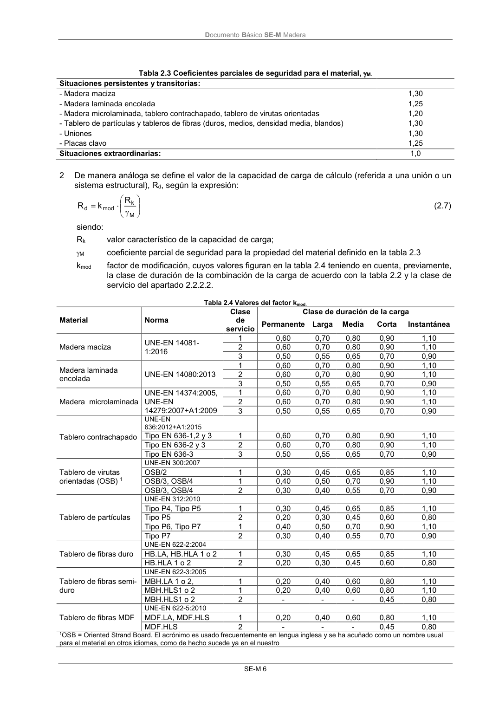

DB-SE-M Madera · edición 2019-12-20 · capa oficial
Documento DB-SE-M-oficial · SHA-256 del PDF 26b5819839ebfda78b0b119c5e76a0a37773b0d763c05688541870075df93718
Página física 12 de 132.
Copia fiel del PDF fuente · Fuente oficial
Ficha de la disposición en la fuente oficial
Formato: Texto de la página (Markdown)
Documento Básico SE-M Madera SE-M 6 Tabla 2.3 Coeficientes parciales de seguridad para el material, M. Situaciones persistentes y transitorias: - Madera maciza 1,30 - Madera laminada encolada 1,25 - Madera microlaminada, tablero contrachapado, tablero de virutas orientadas 1,20 - Tablero de partículas y tableros de fibras (duros, medios, densidad media, blandos) 1,30 - Uniones 1,30 - Placas clavo 1,25 Situaciones extraordinarias: 1,0 2 De manera análoga se define el valor de la capacidad de carga de cálculo (referida a una unión o un sistema estructural), Rd, según la expresión: M k mod d R k R (2.7) siendo: Rk valor característico de la capacidad de carga; M coeficiente parcial de seguridad para la propiedad del material definido en la tabla 2.3 kmod factor de modificación, cuyos valores figuran en la tabla 2.4 teniendo en cuenta, previamente, la clase de duración de la combinación de la carga de acuerdo con la tabla 2.2 y la clase de servicio del apartado 2.2.2.2. Tabla 2.4 Valores del factor kmod. Material Norma Clase de servicio Clase de duración de la carga Permanente Larga Media Corta Instantánea Madera maciza UNE-EN 14081- 1:2016 1 0,60 0,70 0,80 0,90 1,10 2 0,60 0,70 0,80 0,90 1,10 3 0,50 0,55 0,65 0,70 0,90 Madera laminada encolada UNE-EN 14080:2013 1 0,60 0,70 0,80 0,90 1,10 2 0,60 0,70 0,80 0,90 1,10 3 0,50 0,55 0,65 0,70 0,90 Madera microlaminada UNE-EN 14374:2005, UNE-EN 14279:2007+A1:2009 1 0,60 0,70 0,80 0,90 1,10 2 0,60 0,70 0,80 0,90 1,10 3 0,50 0,55 0,65 0,70 0,90 Tablero contrachapado UNE-EN 636:2012+A1:2015 Tipo EN 636-1,2 y 3 1 0,60 0,70 0,80 0,90 1,10 Tipo EN 636-2 y 3 2 0,60 0,70 0,80 0,90 1,10 Tipo EN 636-3 3 0,50 0,55 0,65 0,70 0,90 Tablero de virutas orientadas (OSB) 1 UNE-EN 300:2007 OSB/2 1 0,30 0,45 0,65 0,85 1,10 OSB/3, OSB/4 1 0,40 0,50 0,70 0,90 1,10 OSB/3, OSB/4 2 0,30 0,40 0,55 0,70 0,90 Tablero de partículas UNE-EN 312:2010 Tipo P4, Tipo P5 1 0,30 0,45 0,65 0,85 1,10 Tipo P5 2 0,20 0,30 0,45 0,60 0,80 Tipo P6, Tipo P7 1 0,40 0,50 0,70 0,90 1,10 Tipo P7 2 0,30 0,40 0,55 0,70 0,90 Tablero de fibras duro UNE-EN 622-2:2004 HB.LA, HB.HLA 1 o 2 1 0,30 0,45 0,65 0,85 1,10 HB.HLA 1 o 2 2 0,20 0,30 0,45 0,60 0,80 Tablero de fibras semi- duro UNE-EN 622-3:2005 MBH.LA 1 o 2, 1 0,20 0,40 0,60 0,80 1,10 MBH.HLS1 o 2 1 0,20 0,40 0,60 0,80 1,10 MBH.HLS1 o 2 2 - - - 0,45 0,80 Tablero de fibras MDF UNE-EN 622-5:2010 MDF.LA, MDF.HLS 1 0,20 0,40 0,60 0,80 1,10 MDF.HLS 2 - - - 0,45 0,80 1OSB = Oriented Strand Board. El acrónimo es usado frecuentemente en lengua inglesa y se ha acuñado como un nombre usual para el material en otros idiomas, como de hecho sucede ya en el nuestro

Datos candidatos: compruebe celdas y notas en el PDF.